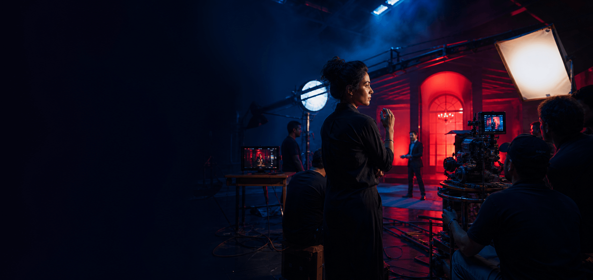
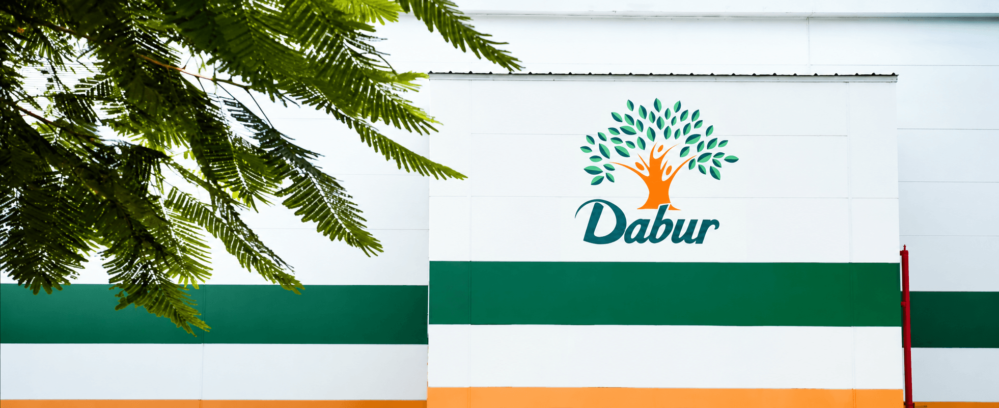

Hero storytelling
Commercial films
Brand films, television commercials and digital-first stories with cinematic direction and craft.

Film · Content · Production craft
We bring ambitious ideas to life through film, content and production craft— built for every screen, shaped with care in every frame.
A Madverse specialist company Pre-production → Shoot → Post
What we produce
Production is where an idea becomes something people can watch, feel and remember.
Mad Men Production brings direction, craft and control into one connected making process. From commercial films and social content to product stories and branded experiences, we protect the idea while solving every practical detail needed to bring it to screen.



Keep the creative intent clear from treatment and casting through shoot and final delivery.
Bring the right directors, crews, techniques and finishing talent around every production.
Plan each production as a connected content system for different screens, formats and timelines.
Production capabilities
We assemble the right creative and technical team around each idea, then manage the complete journey from treatment and planning to final masters.
Hero storytelling
Brand films, television commercials and digital-first stories with cinematic direction and craft.

Always moving
Platform-native films and modular content systems designed for pace, relevance and volume.

Detail & desire
Tabletop, food, beauty and product films that make material, movement and benefit feel tangible.

The final finish
Editing, colour, sound, VFX and finishing that sharpen the story and protect every detail.
Beyond live action
2D, 3D and motion design for ideas that need worlds, characters or movements cameras cannot capture.
End to end
Budgets, crews, casting, locations, permits, schedules and delivery managed through one accountable team.
How we make
Great production is equal parts preparation and instinct. We solve complexity early, create space for craft on set and stay accountable through every final delivery.
Align
Clarify the creative ambition, audience, formats, budget and non-negotiables before production choices begin.
Brief · Scope · FeasibilityPrepare
Bring together the director, treatment, casting, locations, crew, schedule and technical plan around one vision.
Treatment · Casting · PPMShoot
Run a focused set where direction, performance and technical craft work together without losing time or intent.
Direction · Camera · SoundShape
Edit the story, build sound, refine colour and integrate motion or VFX until every frame supports the idea.
Edit · Grade · Sound · VFXDeliver
Create and quality-check the complete master system for every screen, market, length and platform requirement.
Masters · Adaptations · QCCraft across every screen
We plan the master idea and its complete content ecosystem together—so every edit feels intentional, not like an afterthought cut from the hero film.
The complete story, paced for attention and emotion.
Native compositions designed for the way mobile audiences watch.
Focused moments built to land quickly without losing the central idea.
Bold visual expressions for outdoor, display and physical environments.
Selected production work
Selected films and content systems brought from creative ambition to final delivery.
Explore all workBuilt for scale and quality
Modern production does not end with one final film. We design the shoot and post workflow around the complete delivery ecosystem, maintaining craft as the number of outputs grows.
One aligned creative, production and technical foundation.
Shot lists, framing and performances account for every priority output before cameras roll.
One accountable production team protects intent, files, feedback and approvals from set to master.
Picture, sound, supers, legal requirements and platform specifications are checked before release.
More outputs should create more value.
Not more inconsistency.
Part of the Madverse Collective
Production works best when decisions stay connected to the strategy and creative idea. Inside Madverse, every specialist joins at the moment their expertise creates the most value.
Meet the collectiveDefines the audience, business role and growth opportunity behind the brief.
↗Builds the identity, graphic system and art direction carried through every frame.
↗Owns the complete production journey from treatment and planning to final masters.
Brings platform, audience and live-response insight into formats and optimisation.
↗Different specialists.
One idea, made without compromise.
Have a brand to grow, a
challenge to solve or
something worth building?